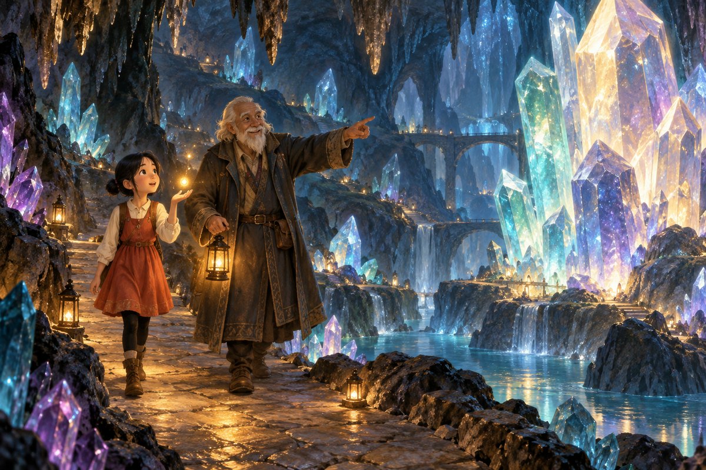
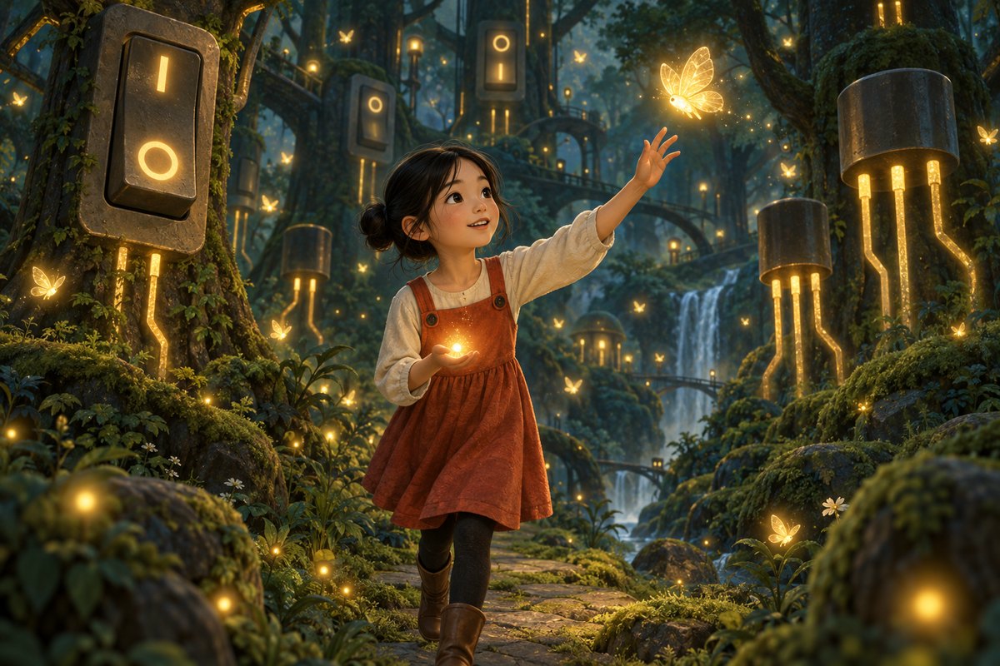
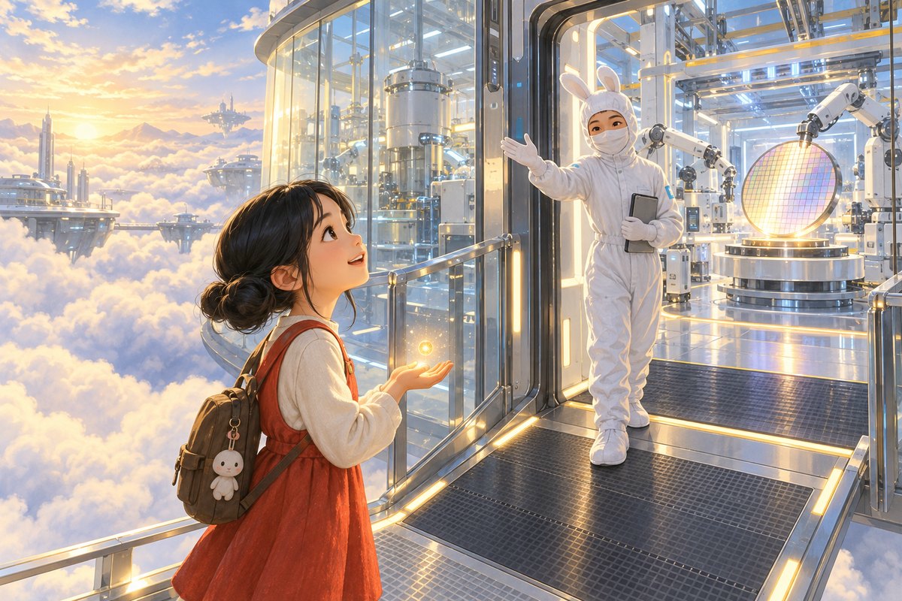

← The Thinking Sand (learning mode)
Mira and the Great Dimming
An interactive chip quest for ages 14+ - story mode companion to The Thinking Sand
One evening every chip in the world forgot how to think. A girl, a glowing grain of sand, six realms and one Lighthouse: learn what the world runs on, and use it to bring the light back.
One October evening, every chip in the world forgot how to think. The lights did not die - the decisions did. Trains hesitated, gates froze, phones went silent. Grown-ups called it the Dimming, and waited for someone to fix it.
In her grandmother's kitchen, a girl named Mira found one thing still glowing: a single grain of sand in a jar. It was Sili, and it spoke: "The world can be relit - but only by someone who understands it. Will you learn?"
Six realms stand between Mira and the Lighthouse. Each hides a Spark of understanding. Learn what each realm teaches, earn its spark, and relight the world.
0 of 6 sparks lit
Realm I
The City of Sleeping Machines
The Dimming did not take the electricity - it took the thinking. Machines still hummed, but nothing inside them decided anything any more. At the hawker centre, an uncle stared at his rice cooker like it had betrayed him. "Chips are not rare treasures, Mira," said Sili. "They are the city's thoughts. Find where they sleep."
Tap each machine to wake its chip and see what it was quietly doing all along.
Realm II
The Crystal Caves

Deep under the city, the Crystal Caves had gone quiet. An old keeper of the caves lit Mira's way down. "Pure crystal is honest but stubborn," Sili said. "To make it sing, you must tune it - a pinch of another element. This is doping, the first spell of every chip-maker."
Choose a dopant, then tap atoms in the crystal to replace them.
The cave crystal is pure silicon - beautiful, orderly, and almost silent. It barely conducts.
The Door That Only Opens One Way
At the caves' end stood a crystal door - P-type pressed against N-type. "A diode," whispered Sili. "Current crosses in one direction only. Flip the battery and see."
Realm III
The Switchwood

The Switchwood was a forest of living switches - billions of transistors, each one opened or closed by electricity itself, no moving parts. Moths of light drifted between the trees, waiting to be let through. "A switch alone is simple," said Sili. "But teach switches to work together and they can make decisions."
Two fireflies guard each gate. Choose a gate, light the fireflies, and find the combination that lets a moth through.
Every app, every game, every AI answer is oceans of these tiny decisions, made billions of times a second.
Realm IV
The Sky Fab

High above the clouds floated the Sky Fab, silent since the Dimming. A cloud engineer in a white coat waved Mira aboard. "A chip is not built - it is printed," said Sili, "in the most precise factory humanity has ever made. Walk the six stations, and the fab will remember you."
The Shrinking Spell
In 1965, Gordon Moore foretold that transistors per chip would double about every two years. The spell held for half a century. Drag through time:
1971
Intel 4004
2,300 transistors
Realm V
The Library of a Thousand Minds
The library's million books lay scattered, and only sorting them could wake the Great Index. Two helpers waited: the Scholar - one brilliant mind, fast at any single task - and the Choir - a hundred young readers, each slower, all working side by side.
The task: shelve 64 identical piles of books - the same simple job, repeated. AI maths is exactly this kind of work: one tiny operation, repeated trillions of times.
The Scholar (CPU) - 2 piles at a time0/64
The Choir (GPU) - 32 piles at a time0/64
Same shelves, different strengths. The Scholar would win at one tricky, twisting task; the Choir wins when the task is the same simple move repeated massively - which is why AI runs on GPUs. And remember: the ratios were invented for teaching.
Realm VI
The Woven World
At the world's edge Mira saw it: the light was never made in one place. It was woven - a single chip crossing more than 70 borders and passing through over 1,000 steps before it reached her. "No country can weave this alone," said Sili. "That is the world's strength, and its fragility." Follow the thread - tap each stamp:
Finale
The Lighthouse
At the top of the Lighthouse, the Keeper of the Last Lamp barred the way. "The lamp answers only understanding," she said. "Five riddles. Every wrong guess teaches - the door does not punish trying."
0 of 5 lamps lit
The world relights.
One by one the windows woke, the gates swung open, the trains remembered their way. Sili's glow softened. "You see now," it said. "The light was never in the machines. It was in understanding them - and that is a light no Dimming can take." Mira smiled. She had saved the world the only way anyone ever does: by learning how it works.
What Mira discovered
- Sight - chips are everywhere, in dozens of kinds, quietly running the world.
- Flow - pure silicon barely conducts; doping tunes it into N-type and P-type, and where they meet, current passes one way only.
- Logic - transistors are switches flipped by electricity itself; wired together they become gates, and gates become every decision a computer makes.
- Craft - chips are printed in layers with light, in the most precise factories ever built; Moore's law drove the shrinking for fifty years.
- Scale - AI needs the same simple operation repeated massively, which is why it runs on thousands of small cores working side by side.
- Connection - one chip crosses 70+ borders and 1,000+ steps; no country builds alone, which is both the industry's strength and its fragility.
Keep the story going
- Mira saved the world by understanding it. What system near you - school, transport, money - would fail in a new Dimming, and who understands it well enough to save it?
- The Keeper's lamp "answered only understanding". Is that true of real power too - should you have to understand a technology to be trusted with it?
- The Woven World is strong because it is shared, and fragile because it is shared. If you were Singapore, would you weave deeper into it or learn to weave alone?
- The Choir beat the Scholar at shelving, but the Scholar would win at one twisting task. When is a crowd better than a genius - in machines, and in people?
- Rapidus is spending about US$15 billion to rejoin the frontier. If you ran it, how would you persuade customers to trust a newcomer?
Sources and acknowledgement
This story was inspired by the book 半導體超圖解：寫給未來人才的科技必修課 (by InfoVisual Research Institute, supervised by SEMI Japan, Chinese edition 漫遊者文化, May 2026, ISBN 9786264092173 - details verified against books.com.tw) and by 半導體的未來 (The Future of Semiconductors, 人人伽利略特刊2, 人人出版, Taiwan). Both are recommended for further reading. All story, text, activities and illustrations here are original creations for this site; nothing from either book's artwork or text is reproduced.
- Singapore EDB - Singapore's share of world chips and chip equipment: edb.gov.sg/en/our-industries/advanced-manufacturing.html
- ASML - EUV lithography, 13.5 nm wavelength, sole supplier: asml.com/en/products/euv-lithography-systems
- TrendForce, Sep 2026 - TSMC about 72.5% of foundry revenue, Q2 2026: trendforce.com
- SEMI and DHL, "Resilience of the Semiconductor Supply Chain" - 1,000+ steps, 70+ border crossings per chip
- Reuters, 23 Oct 2026 - Rapidus: roughly US$15B in government backing, 2nm mass production targeted for the second half of 2027 in Hokkaido
A story-mode companion to The Thinking Sand - built for secondary-school technology literacy, bridging Computing, Physics and Economics. Share it freely with your class.